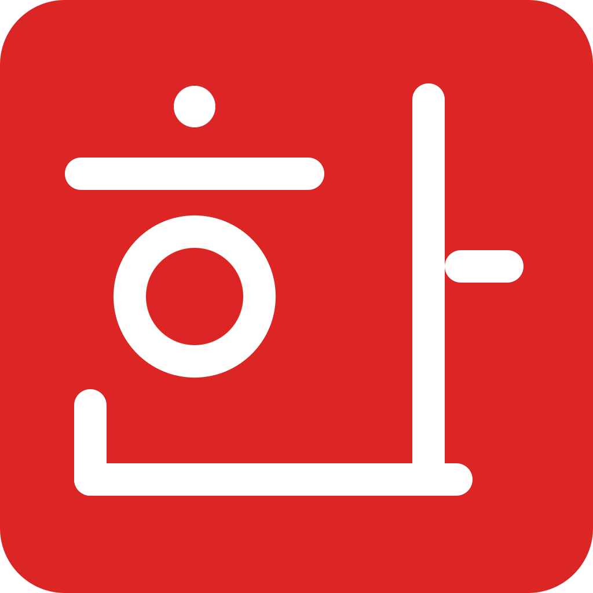
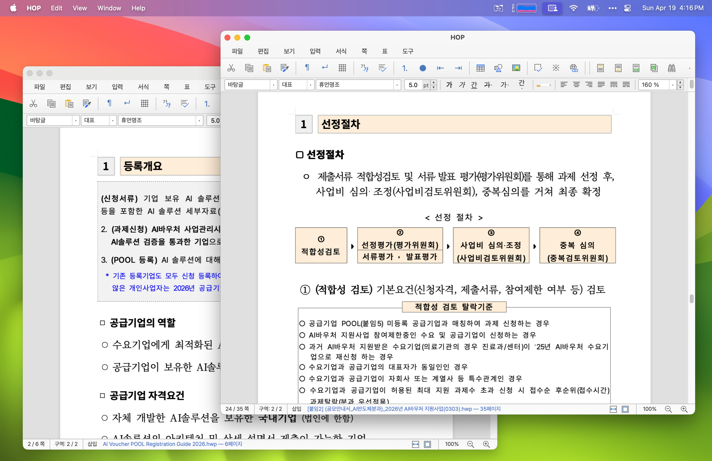

HWP/HWPX 열기
한글 문서의 두 가지 포맷을 모두 지원합니다. 본문, 표, 이미지, 글머리표 등 핵심 요소가 정확하게 보입니다.

YHWP Open HWP최신 버전 확인 중…
YHWP는 한컴오피스 없이도 HWP/HWPX 문서를 보고, 편집하고, PDF로 내보낼 수 있는 오픈소스 데스크톱 앱입니다. 가볍고 빠르게, 그리고 무료로.

기능
HWP의 핵심을 놓치지 않으면서, 데스크톱 앱이 제공해야 할 OS 통합 기능을 담았습니다.
한글 문서의 두 가지 포맷을 모두 지원합니다. 본문, 표, 이미지, 글머리표 등 핵심 요소가 정확하게 보입니다.
글자 모양, 문단 정렬, 줄 간격, 표 편집 등 일상에서 필요한 편집 기능을 빠르게 제공합니다.
네이티브 SVG-to-PDF 경로로 깔끔한 PDF를 만들고, OS 인쇄 다이얼로그로 바로 출력할 수 있습니다.
파일 탐색기에서 끌어다 놓아 바로 열 수 있고, .hwp / .hwpx 파일 연결도 OS에 등록됩니다.
문서 여러 개를 동시에 띄워 비교 편집하기 좋습니다. 각 창은 독립적으로 동작합니다.
라이트와 다크 모드를 모두 지원합니다. 시스템 설정을 따르는 자동 모드도 우상단 토글로 즉시 전환됩니다.
설치 없이 hwp.youngsam.net/view 에서 브라우저로 HWP/HWPX 를 바로 열어볼 수 있습니다.
MIT 라이선스로 누구나 자유롭게 사용·수정·기여할 수 있습니다. 한컴오피스 라이선스 없이도 사용 가능합니다.
다운로드
GitHub Releases에서 최신 빌드를 받아옵니다…
Homebrew로도 설치할 수 있습니다.
$ brew install hop
전체 파일과 변경 이력은 GitHub Releases에서 확인할 수 있습니다.
설치 방법
다운로드한 파일을 어떻게 설치하는지 OS별로 안내합니다.
코드 서명 자격 적용 전이라 첫 실행 시 경고가 표시됩니다. 한 번만 통과하면 그 이후엔 정상 실행됩니다.
Edge에서 “일반적으로 다운로드되지 않는 파일” 경고가 뜨면, 브라우저 우상단 다운로드 항목의 ⋯ 메뉴 → 유지를 누르세요. Chrome은 ▾ → 계속입니다.
다운로드 폴더에서 YHWP-windows-x64.msi 파일을 더블클릭합니다.
“Windows의 PC 보호” 또는 “이 앱을 실행할 수 없습니다” 화면이 나오면 추가 정보 → 실행을 차례로 누릅니다.
설치 마법사를 따라가면 자동으로 완료됩니다. 시작 메뉴에서 “YHWP”을 검색해 실행하세요. .hwp / .hwpx 파일을 더블클릭하면 YHWP으로 열립니다.
YHWP-macos-*.dmg를 더블클릭합니다.sudo apt install ./YHWP-linux-x64.debsudo dnf install ./YHWP-linux-x64.rpmchmod +x YHWP-linux-x64.AppImage
./YHWP-linux-x64.AppImage다운로드 검증
SmartScreen·Gatekeeper 경고가 신경 쓰이신다면, GitHub의 빌드 서버가 만든 파일과 동일한지 SHA-256 해시로 직접 검증할 수 있습니다.
다운로드 폴더에서 PowerShell을 열고:
Get-FileHash -Algorithm SHA256 .\YHWP-windows-x64.msi
기대 해시 (YHWP-windows-x64.msi):
로딩 중…
다운로드 폴더에서:
shasum -a 256 YHWP-macos-arm64.dmg
기대 해시 (YHWP-macos-arm64.dmg):
로딩 중…
다운로드 폴더에서:
sha256sum YHWP-linux-x64.deb
기대 해시 (YHWP-linux-x64.deb):
로딩 중…
전체 해시 목록은 SHA256SUMS.txt에서 확인할 수 있습니다.
시스템 요구사항
FAQ
네. YHWP는 한컴오피스와 별개의 오픈소스 프로젝트입니다. HWP/HWPX 파일을 직접 파싱·렌더링하므로 한컴오피스 설치나 라이선스가 필요하지 않습니다.
현재 Windows 빌드에는 코드 서명이 적용되어 있지 않아 처음 다운로드/실행 시 경고가 표시될 수 있습니다. 빌드는 GitHub Actions 빌드 서버가 공개적으로 수행하며, 위 “다운로드 검증” 섹션의 SHA-256 해시로 직접 검증할 수 있습니다.
HWP 저장은 atomic 저장(임시 파일 → 원본 교체)으로 안전하게 처리됩니다. 다만 현재 HWPX 저장은 안전한 직렬화기가 준비되기 전까지 비활성화되어 있습니다 (HWPX 열기는 가능).
아니요. YHWP는 로컬에서 모든 처리를 수행하며 텔레메트리·문서 내용 업로드를 일절 수행하지 않습니다. 네트워크는 자동 업데이트 확인(GitHub 릴리즈 메타데이터)에만 사용됩니다.
macOS·Windows에서는 시스템 IME가 자연스럽게 동작합니다. Linux는 .deb/.rpm 패키지를 권장하며, AppImage는 일부 Wayland·IME 환경에서 한영 전환이 불안정할 수 있습니다.
사이트 운영(영삼넷) 관련 문의는 youngsam.net으로, 빌드 산출물 자체는 GitHub Releases에서 직접 받으실 수 있습니다.